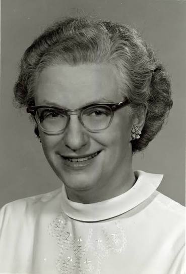
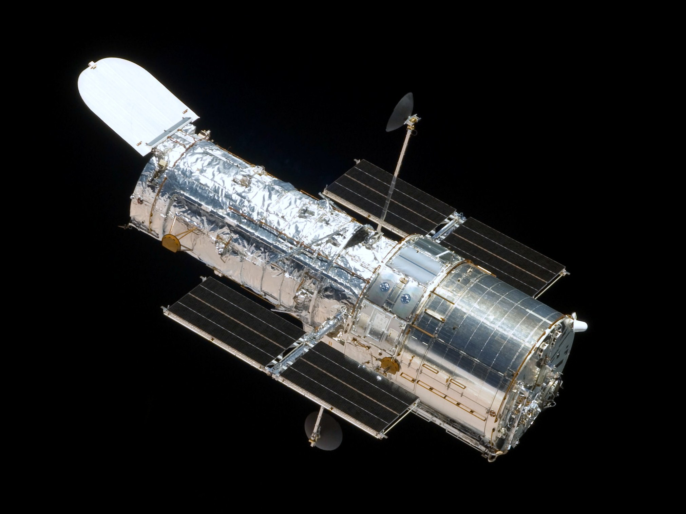
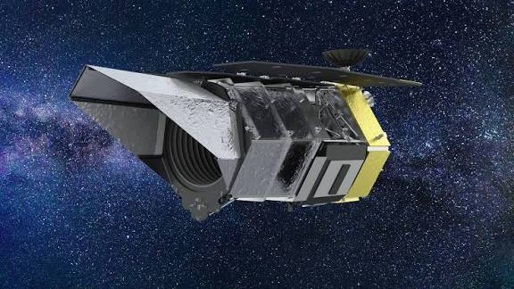

Desencorajamento
Um conselheiro escolar ridicularizou sua escolha de estudar álgebra em vez de latim. Na universidade, ouviu que talvez pudesse “dar certo” na física apesar de ser mulher.
ASTRONOMIA · NASA · 1925—2018
A mulher que ajudou a colocar os olhos da humanidade acima da atmosfera.
Astrônoma, líder e defensora da ciência espacial. Como primeira chefe de Astronomia da NASA, ajudou a abrir caminho para observatórios como o Hubble.

Nancy Grace Roman transformou uma ideia ambiciosa em um programa de observatórios espaciais. Seu trabalho ajudou a tornar possível estudar o cosmos sem o filtro da atmosfera terrestre.
Uma curiosidade que começou olhando para cima — e acabou mudando a forma como olhamos o universo.
Nascida em 16 de maio de 1925, Roman se encantou pelas constelações ainda criança. Aos 11 anos, em Reno, organizou um clube de astronomia com colegas. No ensino médio, já sabia que queria estudar astronomia.
Formou-se em astronomia no Swarthmore College em 1946 e concluiu o doutorado na Universidade de Chicago em 1949. Depois de pesquisar no Observatório Yerkes, trabalhou com radioastronomia no Laboratório de Pesquisa Naval dos Estados Unidos.
Em 1959, poucos meses após a criação da NASA, aceitou o desafio de estruturar um programa de astronomia espacial — uma oportunidade de construir algo novo em escala nacional.
Graduação em astronomia
Doutorado pela Universidade de Chicago
Entrada na NASA
Roman enfrentou preconceito de gênero em uma época em que a ciência e a liderança acadêmica eram dominadas por homens.
Um conselheiro escolar ridicularizou sua escolha de estudar álgebra em vez de latim. Na universidade, ouviu que talvez pudesse “dar certo” na física apesar de ser mulher.
Na Universidade de Chicago, percebeu que as mulheres tinham poucas perspectivas de obter estabilidade acadêmica em astronomia. Saiu para continuar pesquisando em outro caminho.
Mesmo como chefe de Astronomia da NASA, às vezes precisava explicar suas credenciais para conseguir passar por recepcionistas. Sua competência não eliminava o viés.
NOTA DE CONTEXTO Os relatos são resumidos a partir da biografia e das entrevistas de Roman publicadas pela NASA; citações diretas aparecem somente quando atribuídas a uma fonte.
Roman não construiu sozinha cada telescópio. Ela ajudou a organizar a comunidade, defender a ciência espacial e tornar os grandes observatórios um plano concreto.
É contratada para criar o programa de astronomia espacial da agência, fundada em 1958.
Assume a chefia de Astronomia e Relatividade no Escritório de Ciências Espaciais — e se torna a primeira mulher em cargo executivo na NASA.
Planeja programas de satélites e foguetes com a comunidade astronômica e administra apoio à pesquisa. Defende observatórios acima da atmosfera, que bloqueia parte da luz cósmica.
Como cientista do programa, promove a ideia, ajuda a articular apoio e coordena cientistas e engenheiros. Por essa atuação, ficou conhecida como “mãe do Hubble”.

Em 2020, a NASA renomeou o telescópio espacial WFIRST como Nancy Grace Roman Space Telescope. A missão foi concebida para investigar energia escura, exoplanetas e outros temas da astrofísica, ampliando a visão de campo largo no infravermelho.
A data de lançamento é um dado sujeito a atualização. Consulte a página oficial da missão para o cronograma vigente.
Conheça a missão